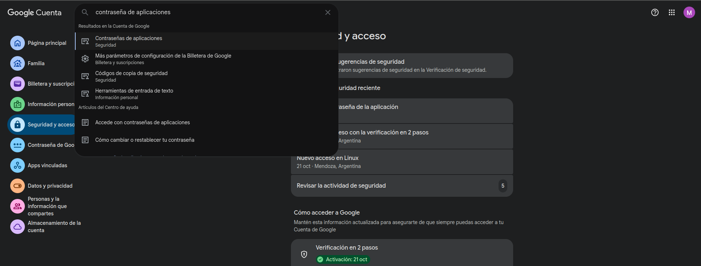
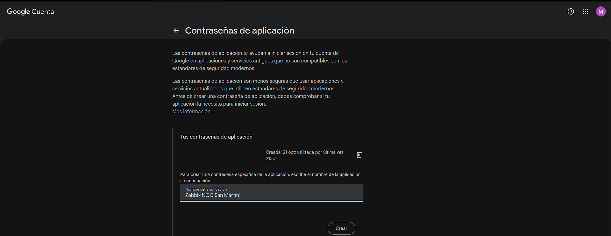

Configuración de alertas por correo electrónico con Gmail en Zabbix¶
1. Introducción¶
La integración de Gmail con Zabbix permite recibir notificaciones por correo electrónico cuando se producen eventos importantes en la infraestructura monitoreada.
Por ejemplo, se pueden recibir alertas cuando un router presenta una latencia elevada, un servidor deja de responder o se detecta un problema de disponibilidad.
Para configurar esta integración se necesitan los siguientes elementos:
- Una cuenta de Gmail.
- La verificación en dos pasos habilitada.
- Una contraseña de aplicación de Google.
- Un tipo de medio de correo electrónico configurado en Zabbix.
- Un usuario con una dirección de correo asignada.
- Una acción configurada para enviar las notificaciones.
2. Crear una contraseña de aplicación en Google¶
Google permite utilizar contraseñas de aplicación para autenticar determinados programas que no utilizan el inicio de sesión habitual de Google. Esta contraseña es diferente de la contraseña principal de la cuenta.
2.1. Acceder a la seguridad de la cuenta¶
- Ingresar a la cuenta de Google que se utilizará para enviar las alertas.
- Abrir Gestionar tu cuenta de Google.
- Ingresar en la sección Seguridad.
- Comprobar que la Verificación en dos pasos esté habilitada.

2.2. Generar la contraseña de aplicación¶
- Utilizar el buscador de los ajustes de Google y buscar
Contraseñas de aplicaciones. - Ingresar a esa opción, si está disponible.
-
Asignar un nombre descriptivo a la aplicación. Por ejemplo:
Zabbix NOC San Martín -
Pulsar Crear.
- Google mostrará una contraseña de aplicación de 16 caracteres.
- Copiarla y guardarla temporalmente en un lugar seguro.

Importante: la contraseña de aplicación es una credencial sensible. No debe publicarse en la documentación ni compartirse en capturas de pantalla. Si Google no muestra esta opción, puede deberse a las características o políticas de seguridad de la cuenta.
3. Configurar protocolo SMTP en Zabbix¶
SMTP (Simple Mail Transfer Protocol) es el protocolo utilizado para enviar correos electrónicos. En esta configuración, Zabbix utilizará los servidores de Gmail para transmitir las notificaciones.
3.1. Acceder a los tipos de medios¶
- Ingresar a la interfaz web de Zabbix con una cuenta que tenga permisos de administración.
- En el menú lateral, abrir Alertas → Tipos de medios (Alerts → Media types).
- Buscar el tipo de medio Email o Email HTML.
- Abrirlo para editar su configuración.

3.2. Configurar los parámetros SMTP¶
Completar los campos con los siguientes valores:
| Parámetro | Valor |
|---|---|
| Servidor SMTP | smtp.gmail.com |
| Puerto SMTP | 587 |
| HELO SMTP | gmail.com |
| Correo SMTP | La dirección de Gmail utilizada como remitente |
| Seguridad de la conexión | STARTTLS |
| Autenticación | Nombre de usuario y contraseña |
| Nombre de usuario | La dirección completa de Gmail |
| Contraseña | La contraseña de aplicación de Google |
Ejemplo de configuración:
Servidor SMTP: smtp.gmail.com
Puerto SMTP: 465
HELO SMTP: gmail.com
Seguridad: SSL/TLS
Autenticación: Nombre de usuario y contraseña

La dirección del remitente y el nombre de usuario deben corresponder a la cuenta que se utilizará para autenticar el envío.
3.3. Guardar la configuración¶
- Revisar que todos los campos estén completos.
- Comprobar que la contraseña de aplicación esté correctamente ingresada.
- Verificar que el tipo de medio esté habilitado.
- Pulsar Actualizar para guardar los cambios.
Nota técnica: el puerto 465 utiliza TLS implícito. Si se utiliza el puerto 587, normalmente corresponde seleccionar STARTTLS, siempre que esa opción esté disponible y configurada correctamente en el tipo de medio.
4. Asignar el correo electrónico al usuario de Zabbix¶
Configurar el servidor SMTP no determina por sí solo quién recibirá los mensajes. Es necesario asignar una dirección de correo al usuario correspondiente.
4.1. Acceder a la configuración del usuario¶
- Abrir Usuarios desde el menú de administración de Zabbix. La ubicación exacta puede variar según la versión.
- Seleccionar el usuario que recibirá las notificaciones, por ejemplo,
Admin. - Abrir la pestaña Medios (Media).
4.2. Agregar el correo electrónico¶
- Pulsar Añadir.
- Completar los campos:
| Campo | Valor |
|---|---|
| Tipo | Email |
| Enviar a | Dirección de correo del destinatario |
| Cuándo está activo | 1-7,00:00-24:00 para todos los días |
| Utilizar si la gravedad es | Seleccionar las severidades que se desean recibir |
| Estado | Habilitado, si aparece el campo |

- Pulsar Añadir en la ventana emergente.
- Volver a la pantalla principal del usuario.
- Pulsar Actualizar para guardar la configuración.
Las severidades seleccionadas determinan qué tipos de eventos pueden generar notificaciones para ese medio.

5. Habilitar el envío de alertas mediante acciones¶
Zabbix utiliza acciones para determinar cuándo debe enviar una notificación y a qué usuarios o grupos debe enviarla.
En este ejemplo, se utilizará una acción existente llamada Alerta Latencia Router.
5.1. Acceder a las acciones de iniciadores¶
- Ingresar a Alertas → Acciones → Acciones de iniciadores (Trigger actions).
- Buscar la acción
Alerta Latencia Router. - Abrirla para editar su configuración.
- Ingresar en la pestaña Operaciones (Operations).
5.2. Configurar el destino de las notificaciones¶
- Editar la operación de envío existente.
- Localizar el campo Enviar únicamente a (Send only to).
-
Seleccionar el medio que corresponda:
-
Todos (All): permite utilizar los medios configurados y disponibles para el usuario destinatario, incluidos Email y Telegram si ambos están correctamente asignados.
-
Email: envía la notificación únicamente por correo electrónico.
-
Revisar que la operación esté dirigida al usuario o grupo correcto.
- Guardar los cambios de la acción.
Importante: seleccionar
Allno garantiza por sí solo que se envíen ambos mensajes. El usuario destinatario debe tener configurados y habilitados los medios correspondientes, y estos deben cumplir las condiciones de envío.
6. Probar el envío de correo electrónico¶
Antes de depender de las alertas automáticas, se recomienda comprobar que el tipo de medio funcione correctamente.
6.1. Ejecutar una prueba¶
- Volver a Alertas → Tipos de medios.
- Abrir la configuración de Email.
- Buscar la opción Probar (Test).
- Introducir una dirección de correo válida como destinatario.
- Completar los campos que solicite la ventana y ejecutar la prueba.

La ubicación y los campos disponibles para esta prueba pueden variar según la versión de Zabbix.
6.2. Verificar el resultado¶
Comprobar si el correo llega a la bandeja de entrada. Si no aparece, revisar también la carpeta de spam.
Una prueba exitosa confirma que el tipo de medio puede enviar el mensaje, pero no garantiza que las acciones automáticas estén configuradas correctamente.
7. Solución de posibles errores comunes¶
7.1. Error de autenticación SMTP¶
Posibles causas:
- La contraseña de aplicación es incorrecta.
- Se ingresó la contraseña habitual de Gmail en lugar de la contraseña de aplicación.
- El nombre de usuario no coincide con la cuenta.
- La contraseña de aplicación fue revocada.
Solución: verificar las credenciales y generar una nueva contraseña de aplicación si es necesario.
7.2. Error de conexión con el servidor SMTP¶
Desde Ubuntu, comprobar la resolución DNS:
getent hosts smtp.gmail.com
Comprobar la conectividad TCP con el puerto 465:
nc -vz smtp.gmail.com 465
Si nc no está instalado, puede instalarse en Ubuntu con:
sudo apt update
sudo apt install netcat-openbsd -y
Si la conexión falla, revisar el acceso a Internet, las reglas del firewall y las restricciones de red.
7.3. El correo no llega al destinatario¶
Comprobar que:
- La dirección de correo esté escrita correctamente.
- El medio Email esté habilitado.
- El usuario tenga asignado el medio.
- Las severidades seleccionadas incluyan el evento.
- La acción esté habilitada y tenga condiciones que coincidan con el evento.
- La operación esté dirigida al usuario o grupo correcto.
7.4. Telegram funciona, pero Gmail no¶
Revisar por separado la configuración SMTP de Gmail, las credenciales y la dirección del destinatario. El funcionamiento de Telegram no confirma que el envío de correo esté operativo.
8. Recomendaciones de seguridad¶
- Utilizar una contraseña de aplicación en lugar de la contraseña principal de Google.
- No guardar contraseñas ni tokens en documentación pública.
- Restringir el acceso a la interfaz administrativa de Zabbix.
- Seleccionar únicamente las severidades necesarias para evitar un exceso de notificaciones.
- Comprobar periódicamente que las alertas lleguen al destinatario correcto.
- Revocar y reemplazar las credenciales si se sospecha que fueron expuestas.